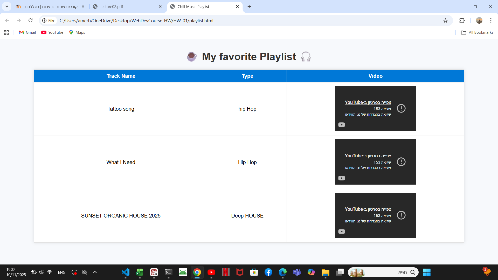
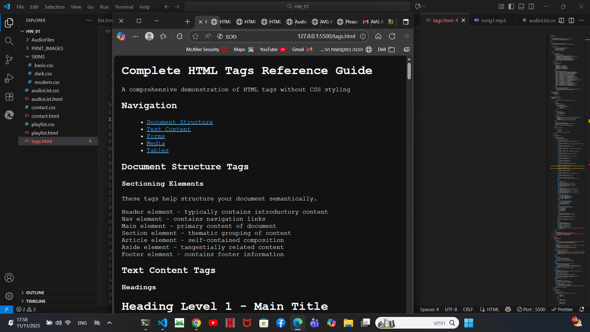

סיכום צילומי מסך
טבלה זו מרכזת את כל צילומי המסך מהתרגיל והקישורים לקומיטים הרלוונטיים ב-GitHub.
| תצוגה מקדימה (תמונה) | תיאור המשימה | קישור ל-Commit ב-GitHub |
|---|---|---|
|  | שלב 11: צילום מסך של טבלת השירים | צפה ב-Commit |

|
שלב 17: צילום מסך של ה-Breakpoint בטופס | צפה ב-Commit |

|
חלון של שליחת הודעה send a message | צפה ב-Commit |
|  | חלון של dark_Skin | צפה ב-Commit |

|
audio list | צפה ב-Commit |